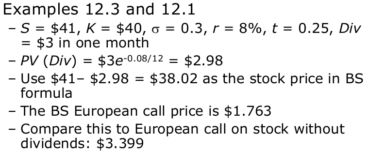

Week 13
Black-Scholes Formula
The Black-Scholes formula is a limiting case of the binomial formula (infinitely many periods) for the price of a European option.
Consider an European call (or put) option written on a stock.
Assume that the stock pays dividend at the continuous rate \(\delta\)
Call option price
\[ C(S, K, \sigma, r, T, \delta) = Se^{\delta T}N(d_1) - Ke^{-rT}N(d_2) \]
\[ C(F_{0, T}^{P}(S), F_{0, T}^{P}(K), \sigma, T) = F_{0, T}^{P}(S)N(d_1) - F_{0, T}^{P}(K)N(d_2) \]
Put option price
\[ P(S, K, \sigma, r, T, \delta) = Ke^{-rT}N(-d_2) - Se^{-\delta T}N(-d_1) \]
where
\[ d_1 = \frac{\ln{S / K} + (r - \delta + \frac{1}{2}\sigma^2)T}{\sigma \sqrt{T}}, d_2 = d_1 - \sigma \sqrt{T} \]
\[ d_1 = \frac{\ln{[F_{0, T}^{P}(S) / F_{0, T}^{P}(K)]} + \frac{1}{2}\sigma^2 T}{\sigma \sqrt{T}}, d_2 = d_1 - \sigma \sqrt{T} \]
\[ F_{0, T}^{P}(S) = Se^{-\delta T}, F_{0, T}^{P}(K) = Ke^{-rT} \]
Assumptions
Assumptions about stock return distribution
- Continuously compounded returns on the stock are normally distributed and independent over time (no ‘jumps’)
- The volatility of continuously compounded returns is known and constant
- Future dividends are known, either as dollar amount or as a fixed dividend yield
Assumptions about the economic environment
- The risk-free rate is known and constant
- There are no transaction costs or taxes
- It is possible to short-sell costlessly and to borrow at the risk-free rate.
Options on stocks with discrete dividends
The prepaid forward price for stock with discrete dividends is
\[ F_{0, T}^{P}(S) = S_0 - PV_{0, T}(Div) \]

Options on currencies (scope out)
The prepaid forward price for the currency is
\[ F_{0, T}^{P}(x) = x_0 e^{-r_fT} \]
Where \(x_0\) is domestic spot rate and \(r_f\) is foreign interest rate

Options on futures
The prepaid forward price for a futures contract is the PV of the future price. Therefore
\[ C(F, K, \sigma, r, T) = Fe^{-rT}N(d_1) - Ke^{-rT}N(d_2) \]
where
\[ d_1 = \frac{\ln{[F / K]} + \frac{1}{2}\sigma^2T}{\sigma \sqrt{T}}, d_2 = d_1 - \sigma \sqrt{T} \]

Option Greeks
What happens to the option price when one and only one input changes?
- Delta (\(\Delta\)): change in option price when stock price increase by $1
- Gamma (\(\Gamma\)): change in delta when option price increases by $1
- Vega: change in option price when volatility increases by 1%
- Theta (\(\theta\)): change in option price when time to maturity decreases by 1 day
- Rho (\(\rho\)): change in option price when interest rate increases by 1%
Greek measures for portfolios
- The Greek measure of a portfolio is weighted average of Greeks of individual portfolio components
\[ \Delta_{portfolio} = \sum_{i = 1}^{n}{\omega_i \Delta_i} \]


Option elasticity (\(\Omega\))
\(\Omega\) describes the risk of the option relative to the risk of the stock in percentage terms: If stock price (S) changes by 1%, what is the percent change in the value of the option (C)?
\[ \Omega \equiv \frac{\text{\% change in option price}}{\text{\% change in stock price}} = \frac{\frac{\epsilon \Delta}{C}}{\frac{\epsilon}{S}} = \frac{S\Delta}{C} \]

\[ \text{The volatility of an option}, \sigma_{option} = \sigma_{stock} \times |\Omega| \]
\[ \text{The risk premium of an option}, \gamma - r = (\alpha - r) \times \Omega \]
\[ \text{Sharpe ratio for call} = \frac{\Omega(\alpha - r)}{\Omega \sigma} = \frac{\alpha - r}{\sigma} = \text{Sharpe ratio for stock} \]
- Where | . | is the absolute value, \(\gamma\) is the expected return on option, \(\alpha\) is the expected return on stock, and r is the risk-free rate.
Profit diagrams before maturity
Call option

calendar spreads

Implied volatility
Volatility is unobservable
Option prices, particularly for near-the-money options, can be quite sensitive to volatility.
One approach is to compute historical volatility using the history of returns.
A problem with historical volatility is that expected future volatility can be different from historical volatility.
Alternatively, we can calculate implied volatility, which is the volatility that, when put into a pricing formula (typically Black-Scholes), yields the observed option price.
In practice implied volatilities of in-, at-, and out-of-the money options are generally different.
- A volatility smile refers to when volatility is symmetric, with volatility lowest for at-the-money options, and high for in-the-money and out-of-the-money options.
- A difference in volatilities between in-the-money and out-of-the-money options is referred to as a volatility skew.

Some practical uses of implied volatility include
- Use the implied volatility from an option with an observable price to calculate the price of another option on the same underlying asset
- Use implied volatility as a quick way to describe the level of options prices on a given underlying asset: you could quote option prices in terms of volatility, rather than as a dollar price.
- Checking the uniformity of implied volatilities across various options on the same underlying assets allows one to verify the validity of the pricing model in pricing those options.
Perpetual American options (scope out)
Perpetual American options (options that never expire) are optimally exercised when the underlying asset over reaches the optimal exercise barrier (\(H_c\) for a call and \(H_p\) for a put)
For a perpetual call option the optimal exercise barrier and price are
\[ H_c = K(\frac{h_1}{h_1 - 1}), price = (H_c - K)(\frac{S}{H_c})^{h_1} \]
For a perpetual put option the optimal exercise barrier and price are
\[ H_p = K(\frac{h_2}{h_2 - 1}), price = (K - H_p)(\frac{S}{H_p})^{h_2} \]
where
\[ h_1 = \frac{1}{2} - \frac{r - \delta}{\sigma^2} + \sqrt{(\frac{r - \delta}{\sigma^2} - \frac{1}{2})^2 + \frac{2r}{\sigma^2}} \]
\[ h_2 = \frac{1}{2} - \frac{r - \delta}{\sigma^2} - \sqrt{(\frac{r - \delta}{\sigma^2} - \frac{1}{2})^2 + \frac{2r}{\sigma^2}} \]